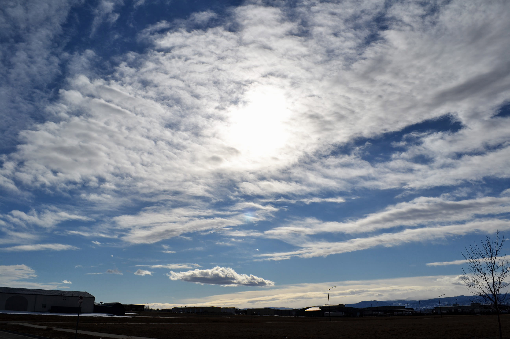

	<div class="container">
      <!-- Example row of columns -->
      <div class="row" id="main">
        <div class="span4">
          <h2>Stratus Clouds</h2>
		  
           <p>A stratus cloud (St) is a cloud belonging to a class characterized by horizontal layering with a uniform base, as opposed to convective clouds that are formed by rising thermals (these are also known as cumuliform clouds). More specifically, the term stratus is used to describe flat, hazy, featureless clouds of low altitude varying in color from dark gray to nearly white. Stratus clouds may produce a light drizzle or snow. A "cloudy day" commonly features a sky filled with stratus clouds obscuring the disk of the sun. These clouds are essentially above-ground fog formed either through the lifting of morning fog or through cold air moving at low altitudes over a region. Some call these clouds "high fog" for the fog-like cloud. While light rain may fall, this cloud does not indicate much meteorological activity.</p>
        </div> <div class="span4">
        <h2 class="media-title">Stratiform</h2>
<p>In general, stratiform-category clouds have a flat sheet-like structure and form at any altitude in the troposphere where there is sufficient condensation as the result of non-convective lift of relatively stable air, especially along warm fronts, around areas of low pressure, and sometimes along stable slow moving cold fronts. In general, precipitation falls from stratiform clouds in the lower half of the troposphere. If the weather system is well-organized, the precipitation is generally steady and widespread. The intensity varies from light to heavy according to the thickness of the stratiform layer as determined by moisture content of the air and the intensity of the weather system creating the clouds and weather. Unlike free convective cumuliform and cumulonimbiform clouds that tend to grow upward, stratiform clouds achieve their greatest thickness when precipitation that forms in the middle level of the troposphere triggers downward growth of the cloud base to near surface level. Stratiform clouds can also form in precipitation below the main frontal cloud deck where the colder air is trapped under the warmer airmass being forced above by the front. Non-frontal low stratiform cloud can form when advection fog is lifted above surface level during breezy conditions.</p>

       </div>
        <div class="span4">
         <h2 class="media-title">Stratocumuliform</h2>
<p>Clouds of this physical structure have both cumuliform and stratiform characteristics and generally form as a result of limited convection in slightly unstable air. They can form at any altitude in the troposphere wherever and whenever there is sufficient moisture and lift. High stratocumuliform clouds also tend show some cirriform characteristics or form in association with cirriform clouds. If a poorly organized low-pressure weather system is present, virga or weak intermittent precipitation may fall from those stratocumuliform clouds that form mostly in the low and lower-middle height ranges of the troposphere.</p>


	     
	<div class="media">
	<div class="media-img">
	<div class="media-img media-img-reversed">
	
	</div>
	<div class="media-body">
	<h2 class="media-title">Forecast</h2>
	<p>A stratus cloud can form from stratocumulus spreading out under an inversion, indicating a continuation of prolonged cloudy weather with drizzle for several hours and then an improvement as it breaks into stratocumulus. Stratus clouds can persist for days in anticyclone conditions. It is common for a stratus to form on a weak warm front, rather than the usual nimbostratus. If it is seen after rain, it should clear due to warm front succession; but if this does not occur, the stratus must be part of the warm sector of a frontal system; heavy rain may start again with the arrival of a cold front after several hours of stratus.</p>
	</div>

    </div> <!-- /container -->

